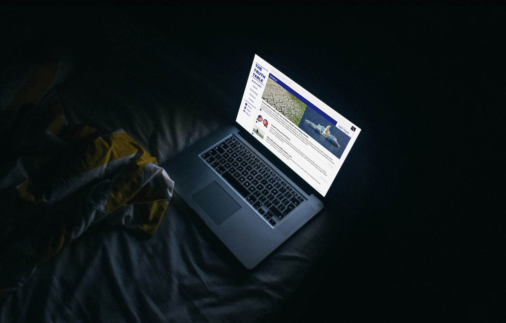

The Truth Table
A social platform to solve the issue of increasing ‘Fake News’

Context
Delievered as part of the Social + Mobile Computing course at UQ, the project brief required us to develop a novel but thoughtful design solution for a specific user group in society, in order for us to develop our research, design and prototyping skills and explore emerging technologies and best practice with social + mobile technologies.

Description
The Truth Table (TTT) is a social platform that aims to solve the issue of increasing ‘Fake News’ produced by mainstream media, with the intent of manipulation and spreading of biased opinions. The Truth Table connects people to interact and discuss about the current news topics and related articles by sharing opinions and judging the reliability of sources. The aim of The Truth Table is to provide a platform for such users to work together and find the ‘Truth’, through mutual discussion and voting systems. Whether it’s political events, technology news, science questions, or issues happening all around the globe, TTT will have the topic right there, ready for people to find the truth.
Design Process
My role
- length: 3 months, in studio
- role: design lead, ux research + design, marketing
- phases: research + design + prototype
- platforms: web + mobile
- See the project on Github
Design Planning
Our initial project planning phase spanned across multiple workshops and ideation activities in to the course brief. From these sessions, our team decided to focus on designing for people aged between 18 to 34, who are mostly exposed to social media will be the main target group, especially those who are aware of social trends and incidents. Once our initial literature review and proposal was accepted, we designed our sprints to help us keep on track for our showcase in week 13.

Research + Design
The project went through several prototyping phases with the same design iteration process. As with each cycle, team gained more user feedback and ideas toward the final prototype.
To start, we established design ideas and concepts by looking at the requirements and identifying the associated domain and user needs that would need to be fulfilled.
The concept of Fake News and misinformation was established as being a domain where users primarily wanted to discern fact from fiction but ideally we would want a way of combating the fatigue that comes to be associated with an overload of fake news. This means we would want to able to make it enjoyable or at the very least not boring so the solution would be more accessible to more users. We did this by taking inspiration from existing solutions and then expanding upon them to more accurately fit the solution into our problem space. The main inspirations for our designs were Newsvoice and Would You Rather (WYR) due to Newsvoice’s news aggregation and community style and WYR’s ability to be entertaining especially when we applied its style in the context of our Real or Fake module.
Prototyping + Testing
In the process of prototyping, we primarily used Figma and Web design tools. We created a low fidelity prototype using Figma and after appropriate user testing using the Figma prototype, created a high fidelity prototype using HTML, CSS and JavaScript for further implementation and development.We iterated on each prototype based on user feedback gained through user testing and interviews in conjunction with academic research conducted through literary review and observation.
The process of user testing was conducted by user data gathering and interview questions. We conducted prototype interaction observation sessions to set task performance benchmarks and to collect results and suggestions on usability and design from users. From this, we evaluated and analysed the collected user data and feedback in order to identify trends and what needed to be improved or changed based on user feedback. The poster and promotional materials created to communicate our prototype and process were created by me.
Link to the project Github